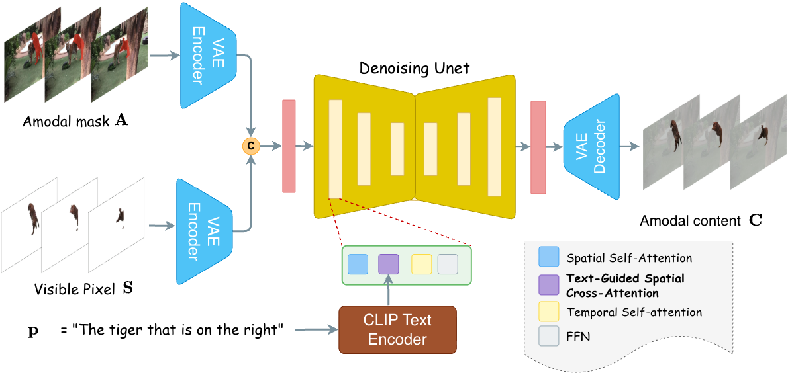

How does it work?
REVEAL allows the user to provide a text query specifying the object of interest. The text query serves a dual role: it drives open-vocabulary video segmentation to obtain visible masks across frames, and it provides semantic guidance for texture reconstruction. The model then performs a two-stage prediction. Stage 1 – Amodal Mask Segmentation: We introduce optical flow guidance as a motion prior. By warping visible masks from previous frames to the current frame, the flow-warped mask propagates visible content into occluded regions and approximates the object's current shape, providing a strong shape prior even under simultaneous deformation and occlusion. Stage 2 – Video Amodal Texture Completion: Text guidance constrains the reconstruction of occluded appearance while providing a stable semantic reference that helps maintain visual coherence throughout the reconstruction. The text remains constant across frames, offering a consistent semantic anchor for temporal coherence.

